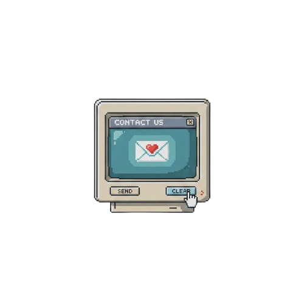

My Showcase - Ashutosh Goyal.exe
08:54
Netflix
Wikipedia
Excel
Edge
My Showcase - Ashutosh Goyal.exe
Ashutosh
Goyal
Think->Build->Improve
I’m Ashutosh Goyal (Ashu), a Computer Science Engineering student who believes
technology should solve real-world problems — not just exist on paper. I was born on
14 May 2007 in Gwalior, India, and from a young age I was fascinated by how
things worked. I loved opening gadgets, pressing every button, and asking why something
behaved the way it did — that curiosity grew into a passion for building.
I enjoy creating systems that combine software, hardware, and intelligence, especially
in areas like safety, accessibility, and social impact. I’ve worked with Python, Java,
JavaScript, ESP32, and Raspberry Pi, and I’m deeply interested in AI/ML, computer
vision, robotics, IoT, and system design. I’m particularly fascinated by how AI models
like YOLO work internally — and how low-level concepts turn into real applications.
Hackathons are where I thrive. I like solving meaningful Indian real-world problems —
especially around women’s safety and public security. I don’t just aim to build demos; I
focus on feasible, scalable solutions with solid engineering and thoughtful UI/UX.
I started coding because I wanted to build things that actually matter. Over time, I
realized that great technology isn’t about showing off features — it’s about solving
real problems in simple, thoughtful ways. Coding became the tool that lets me
turn ideas into working systems — whether that means improving accessibility,
designing better experiences, or building tools that quietly make life easier. I’m
constantly experimenting, breaking things, fixing them, and learning from every
mistake.
Today, I’m exploring advanced CS topics and considering a Master’s in Computer Science
at Jaypee University of Engineering and Technology. My long-term goal is to build
impactful products and startups that blend
innovation, engineering depth, and social responsibility. Outside of coding, I enjoy
[hobby or interest] and love exploring ideas that challenge how technology should
serve people. At the end of the day, I believe good ideas deserve to become real
— and code is how I make that happen.
Hobbies
My hobbies revolve around exploring and building with technology. I
enjoy coding in my free time, experimenting with new programming concepts, AI models,
and system-level tools to understand how things work beneath the surface. I like
participating in hackathons and technical challenges, where I can turn ideas into real,
working projects under pressure. I’m also interested in robotics and hardware tinkering,
especially working with microcontrollers, sensors, and automation systems.
Beyond coding, I enjoy learning about emerging technologies, improving UI/UX design for
smoother user experiences, and constantly pushing myself to create solutions that are
both innovative and practical. I spend time reading documentation, watching research
breakdowns, and trying to replicate real-world systems just to see how they’re built.
These activities help me think more like an engineer — not just a programmer.
I also believe balance matters. When I’m not building something new, I enjoy slowing
down, reflecting on ideas, and exploring creative sides of technology — whether it’s
design, storytelling, or brainstorming product concepts. These hobbies keep me curious,
improve how I think, and constantly remind me why I love creating things that genuinely
make life easier.
I also enjoy spending time with stories — both books and films. I’ve read titles like
The Fault in Our Stars, Harry Potter, and Twilight, and each of
them taught me something different. Some talk about love and loss, others about courage,
friendship, and the choices we make. I like how books slow things down and give space to
think, imagine, and feel — almost like stepping into another world for a while.
Movies and shows are another big part of how I relax and stay inspired. I really enjoy
watching The Family Man, Stranger Things, Dhurandhar, and many
others. I like stories that mix emotions, suspense, and a little bit of chaos — the type
that keeps you thinking even after it ends. Sometimes I pay attention to the plot, and
sometimes I focus on how the creators built the scenes, timing, and characters.
For me, reading and watching good stories isn’t just entertainment. It helps me
understand different perspectives, learn how people think, and recognize how powerful
storytelling can be. In a way, it also influences my work in tech — reminding me that
behind every system, app, or product, there are real people with real emotions and
experiences. And if technology can respect that, it becomes more meaningful.
As you already know me from the home page, I’m Ashutosh Goyal. I believe
technology is not just about circuits, code, and screens — it’s about human experience.
Great technology disappears into the background. It doesn’t scream for attention. It
simply works — beautifully, quietly, and meaningfully. That idea has shaped the way I
think, build, and learn.
From a young age, I wasn’t satisfied with just using things. I wanted to understand why
they worked, and more importantly, how they could be better. That curiosity led me into
a world where software, hardware, and intelligence come together. Today, I love working
with Python, Java, JavaScript, ESP32, Raspberry Pi and Web Development — not
because they are tools,
but because they help turn imagination into reality. My curiosity pushes me toward
AI/ML, computer vision, IoT, robotics, and system design, where each idea has the
potential to transform someone’s everyday life.
Hackathons excite me because they feel like small versions of the future: limited time,
bold ideas, and a clear purpose. I don’t build just to “show something working.” I aim
to build things that are thoughtful, scalable, and reliable — systems that
respect both engineering and the people who will eventually use them. Technology, if
done right, should feel natural. Almost obvious.
I’m continuing this journey at Jaypee University of Engineering and Technology,
constantly exploring how ideas evolve from simple sketches into real products. My
ambition is to build things that matter — products and startups that combine design,
engineering, and purpose. I don’t want to create technology that simply exists.
I want to create technology that means something.
I break things. I rebuild them. I learn. And I repeat. That cycle is where true progress
happens. I believe every detail matters — from how a button feels to how fast a system
responds. Small decisions shape big experiences, and that mindset drives the way I think
about building.
When I’m not coding, I recharge through stories and worlds that inspire imagination. I
enjoy gaming — titles like Fortnite, Valorant, GTA 5, God of War, Cricket 25 and
many more. These aren’t just games to me. They’re lessons in design, storytelling,
emotion, and precision. They remind me that technology can be powerful, but it should
also be human.
I try to live in a space between curiosity and creation — constantly learning,
constantly questioning, constantly building. Because I believe something deeply: the
world doesn’t move forward by accident. It moves forward when people decide to build
something better than what existed before.
In the end, I don’t just want to write code. I want to create experiences. I want to
craft systems that feel intuitive, honest, and meaningful. And if even one project I
build makes life easier for someone — then the effort was worth it. That’s the kind of
impact I want to leave.
>Glimpse of My ideas
AI • Embedded Systems • Robotics
2022 – Present
Designed and developed PRISM, an ESP32-based intelligent awareness device
integrating audio processing, capacitive touch sensing (MPR121), and real-time
interaction hardware. Worked on embedded architecture involving sensor interfacing,
power management, and low-latency communication between microcontrollers and
peripherals.
Built ARIA, a personal JARVIS-style assistant focused on voice control,
automation, and custom AI datasets — improving my understanding of speech pipelines,
event handling, and full-system integration.
Implemented computer vision and machine-learning concepts using YOLO, OpenCV, and
NumPy, focusing on solving real-world problems instead of academic demos —
including detection pipelines, data handling, and practical deployment challenges.
Developed multiple ESP32 and Raspberry Pi prototypes, integrating sensors, displays, and
Wi-Fi connectivity with attention to product-level UI/UX instead of hobby-grade
interfaces.
Actively participated in hackathons and innovation challenges, building
impact-driven solutions around safety, accessibility, and everyday Indian
problems — taking ownership from concept to working prototype.
Explored Linux customization and automation to streamline development workflows,
experimenting with macOS-like productivity environments on Ubuntu.
Comfortable working across the full stack — hardware, firmware, software, and UI
— bridging the gap between an idea and a functional prototype.
Technical Skills & Learning Journey
- Programming Languages: Java, Python, HTML, CSS, JavaScript, C, C++
- Core Interests: AI/ML, Embedded Systems, Robotics, Computer Vision, System Design
Where I Learn From I strongly believe consistent learning matters more than shortcuts. A lot of my concepts and clarity come from practical experimentation, documentation — and great learning communities online.
Some YouTube channels that shaped my foundation:
- Apna College — fundamentals, DSA basics, structured learning
- CodeWithHarry — fast explanations, real implementation, practical coding tips
Upcoming Hackathons & Participation I actively look for challenges where ideas can turn into working systems.
- Innerve Hackathon – Pune (planned)
- PW Hackathon – Noida (planned)
Contact
Let’s connect.
If you’d like to collaborate, discuss projects, or just say hi — I’m always open to
good conversations.
Email:
Mail
GitHub:
My Github
LinkedIn:
My linkedin
I’m excited to connect — whether it’s ideas, feedback, internships, or collaborations.

I’m Manya Chugh, born on 18 July 2007 in Gwalior, India.
I’m currently studying Computer Science at Amity University, and I love learning
how technology,
design, and creativity come together to make meaningful experiences.
I’m someone who learns fast, adapts quickly, and enjoys adding a sense of confidence and
style into the
things I build. I like systems that feel organized, clean, and intuitive — technology
should not confuse
people, it should quietly guide them.
While I work with tech, I also focus a lot on the human side of it — how something
looks, how it flows,
and how it makes a person feel while using it. That natural mix of creativity +
structure is where I’m
most comfortable.
I am fluent in Hindi, English, and Punjabi, which helps me communicate and
collaborate with
different kinds of people easily. I enjoy planning, ideating, and making sure projects
feel polished and
thoughtfully built.
I like collaborating on projects that matter — especially those that help people,
improve safety,
or make everyday life smoother. I prefer working in calm, focused environments where
ideas evolve
step-by-step instead of rushing.
In short — I’m curious, confident, creative, and always looking for thoughtful ways to
grow.
Hobbies & Personal Interests
I’m someone who believes that hobbies aren’t just activities — they’re windows into who
we are,
how we think, and what truly inspires us. Over time, I’ve realized that the things I
enjoy
are deeply connected to creativity, emotions, curiosity, and learning.
One of the most meaningful parts of my life is writing poetry.
For me, poetry isn’t just about rhymes — it’s about capturing feelings that are
difficult
to say out loud. Sometimes it’s a thought, sometimes a memory, sometimes a moment that
passes
too quickly — and writing lets me hold onto it.
Poetry allows me to slow down, reflect, and understand myself better.
It helps me express strength, vulnerability, love, confusion, excitement — everything.
Every poem feels like a small conversation with myself, quietly shaping the way I see
the world.
Along with writing, I love reading books.
Books give me space to escape reality, but they also push me to think deeper.
They introduce me to different lives, cultures, emotions, and worlds — some magical,
some painfully real, and some beautifully simple.
When I read, I don’t just follow the story —
I notice how characters grow, how authors build feelings, and how every sentence is
crafted.
Some stories make me smile. Some make me cry. Some stay with me long after I close the
book.
Another big part of my free time is watching movies and series.
I don’t just watch them for entertainment — I watch them for story, structure, and
emotion.
I love seeing how directors build tension,
how actors bring characters to life,
and how music, visuals, and dialogues come together to create impact.
Sometimes movies make me laugh.
Sometimes they make me think.
Sometimes they remind me of things I never noticed about people and relationships.
They help me understand behavior, decisions, mistakes — and growth.
In a way, cinema becomes another form of storytelling, just like poetry and books,
but with sound, expression, and visuals layered in.
Beyond creativity, I also have a strong curiosity for technology.
Not from a purely technical perspective — but from a human one.
I love discovering how new tools, apps, AI systems, and digital platforms change
everyday life:
how people use them,
how they affect communication,
and how they shape habits and opportunities.
I enjoy watching explainers, reading articles, and learning how modern systems work
behind the scenes.
Understanding technology gives me confidence — it makes me feel prepared for the future
instead of
overwhelmed by it.
But I also believe in balance.
I spend time reflecting quietly, journaling thoughts, organizing my ideas,
and simply taking pauses when life gets too loud.
I like moments where I can sit peacefully, listen to music,
or walk without thinking too much — because even silence can teach a lot.
Together, my hobbies — poetry, reading, movies, and learning about technology —
have shaped how I think and who I am becoming.
They help me stay creative.
They remind me to stay curious.
They keep me grounded when things feel uncertain.
Most importantly, they teach me that growth doesn’t always come loudly.
Sometimes it comes quietly — through stories, words, ideas, and gentle moments of
understanding.
I see my hobbies as companions on my journey — guiding me,
inspiring me, and constantly reminding me to explore,
feel, learn, and evolve.
Projects • Learning • Collaboration
2023 – Present
My journey so far has been about understanding how ideas turn into working systems.
I’ve worked on several team-based concepts where clarity, design thinking,
and communication mattered just as much as code.
I focus strongly on:
- Turning raw ideas into structured plans
- Designing interfaces that feel natural, not forced
- Helping teams stay calm, focused, and confident
- Breaking complex problems into smaller, solvable parts
I’m comfortable collaborating across: HTML, CSS, basic JavaScript, documentation writing, user testing, presentation decks, research summaries, and feedback loops.
I’ve also learned to stay composed when timelines feel stressful. My natural strength is staying organized, supportive, and clear — especially when others feel overwhelmed.
For me, teamwork is not about who leads — it’s about whether everyone understands the vision and feels confident contributing toward it.
Ideas I love working on — and want to build more in:
- Safety & awareness tools that actually help people
- Minimal, distraction-free productivity apps
- Simple AI helpers that solve everyday problems
- Team-driven hackathon projects with real-world purpose
- Interfaces that feel elegant, not complicated
My approach is simple: start small, improve consistently, and polish until it feels right.
More projects are on the way — because each one teaches something new.
Connect with Manya
If you'd like to collaborate, brainstorm ideas,
or work together on meaningful projects,
feel free to reach out.
Email:
manya.chugh1807@gmail.com
LinkedIn:
linkedin.com/in/manya-chugh-642229374
More platforms will be added soon — as her work and projects grow.
Always open to learning, teamwork, and meaningful builds.